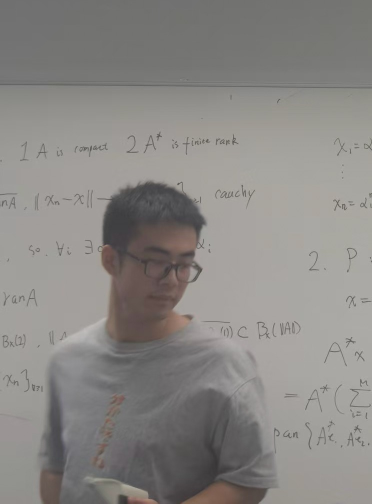

Zeyan Zhuang (庄泽琰)
|
 |
Postdoctoral Research Fellow |
About me
I am a postdoctoral research fellow in the Department of Electronic and Computer Engineering (ECE) at the Hong Kong University of Science and Technology (HKUST), hosted by Prof. Shenghui Song. I received my Ph.D. in ECE from HKUST in 2026 under his supervision. Previously, I earned my B.Eng. in intelligence science and technology from Nankai University (NKU), Tianjin, China, in 2022.
My research interests include random matrix theory, information theory, and their applications in wireless communications, signal processing, and data science.
Publications and Preprints
Journal Articles
No Eigenvalues Outside the Limiting Support of Generally Correlated and Noncentral Sample Covariance Matrices
Z. Zhuang, X. Zhang, D. Xu, and S. Song,
IEEE Trans. Inf. Theory, vol. 72, no. 9, pp. 6928-6962, Sep. 2026. [Paper]Fundamental Limits of Two-hop MIMO Channels: An Asymptotic Approach
Z. Zhuang, X. Zhang, D. Xu, and S. Song,
IEEE Trans. Inf. Theory, vol. 71, no. 6, pp. 4069-4111, Jun. 2025. [Paper]Decentralized MIMO Systems with Imperfect CSI using LMMSE Receivers
Z. Zhuang, X. Zhang, D. Xu, S. Song, and Y. C. Eldar,
IEEE J. Sel. Topics Signal Process., vol. 19, no. 2, pp. 331-348, Mar. 2025. [Paper]
Conference Papers
High-Dimensional SGD Dynamics for Binary Classification Problem with Noisy Labels
Z. Zhuang, X. Zhang, and S. Song,
in Proc. IEEE Int. Symp. Inf. Theory (ISIT), Guangzhou, China, Jun.–Jul. 2026. [Paper]Gradient Descent Dynamics of Rank-One Matrix Denoising
Z. Zhuang and S. Song,
in Proc. Int. Conf. Learn. Representations (ICLR), Rio de Janeiro, Brazil, Apr. 2026. [Paper]Capacity of Holographic MIMO Systems with Mutual Coupling
X. Zhang, Z. Zhuang, S. Song, C. Yuen, and M. Debbah,
in Proc. IEEE Int. Symp. Inf. Theory (ISIT), Ann Arbor, MI, USA, Jun. 2025. [Paper]Asymptotics of Spiked Covariance Model with Random Projection
Z. Zhuang, X. Zhang, D. Xu, and S. Song,
in Proc. IEEE Int. Symp. Inf. Theory (ISIT), Ann Arbor, MI, USA, Jun. 2025. [Paper]Active IRS-aided MIMO Communications: How Much Gain Can We Get?
Z. Zhuang, X. Zhang, D. Xu, and S. Song,
in Proc. IEEE Wireless Commun. Netw. Conf. (WCNC), Dubai, UAE, Apr. 2024, pp. 1-6. [Paper]
Preprints and Manuscripts
A Unified Framework for Characterizing General MIMO Channels
Z. Zhuang, A. Tang, X. Zhang, D. Xu, and S. Song,
submitted to IEEE Trans. Inf. Theory, Oct. 2026. [arXiv]Mutual Information Autocovariance for MIMO Channels with Cross-State Dependence
A. Rezaei, Z. Zhuang, and S. Song,
submitted to IEEE Commun. Lett., Oct. 2026.Fundamental Limits of Jacobi MIMO Channels With Finite Blocklength
X. Zhang, J. Wang, Z. Zhuang, D. Xu, S. Song, and M. Debbah,
submitted to IEEE Trans. Inf. Theory, Aug. 2026.2D Coprime Pilots for Delay-Doppler Sensing in OFDM-ISAC Systems
G. Shang, Z. Zhuang, A. Tang, S. Song, and C. Tsui,
submitted to IEEE Trans. Commun., Jul. 2026. [arXiv]Task-Oriented Precoding for Edge Inference over Large-Scale MIMO Systems
H. Li, Z. Zhuang, Z. Wang, H. He, S. Song, J. Zhang, and K. B. Letaief,
submitted to IEEE J. Sel. Topics Signal Process., Jun. 2026. [arXiv]